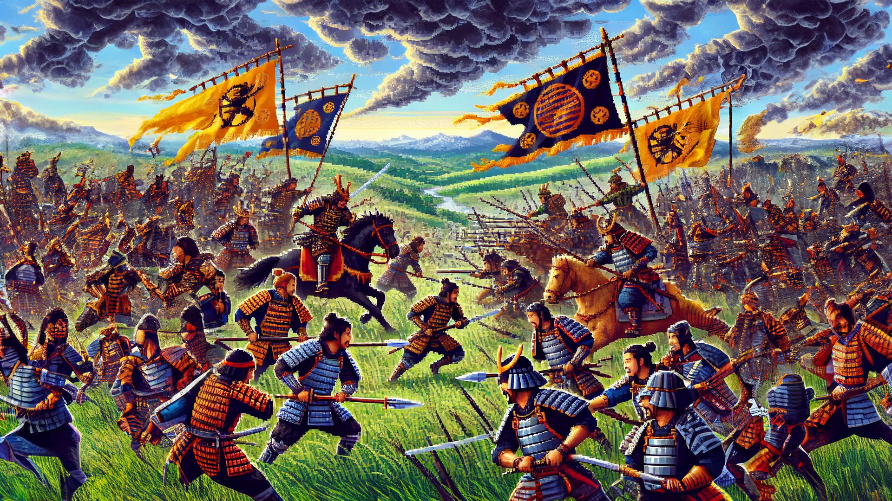

Sekigahara
Incarnez, Battez, Dirigez !
Dans le Japon féodal, combattez aux côtés des plus grands daimyos
pour unifier le Japon
La bataille de Sekigahara
La bataille de Sekigahara est l'un des affrontements les plus décisifs du Japon.
Elle opposa les forces de Ieyasu à une coalition de seigneurs rivaux.
Cette bataille marque la fin des guerres civiles et permet au Japon d'être plus uni que jamais.